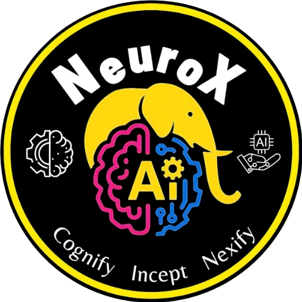

NeuroX
STUDENT
TEACHER
AI Knowledge Quiz
Test your AI knowledge with 15 medium-level questions. Options are shuffled every time!
Start Quiz
Question 1 / 15
Next →
0/15
Quiz Complete!
Here is how you did
Try Again